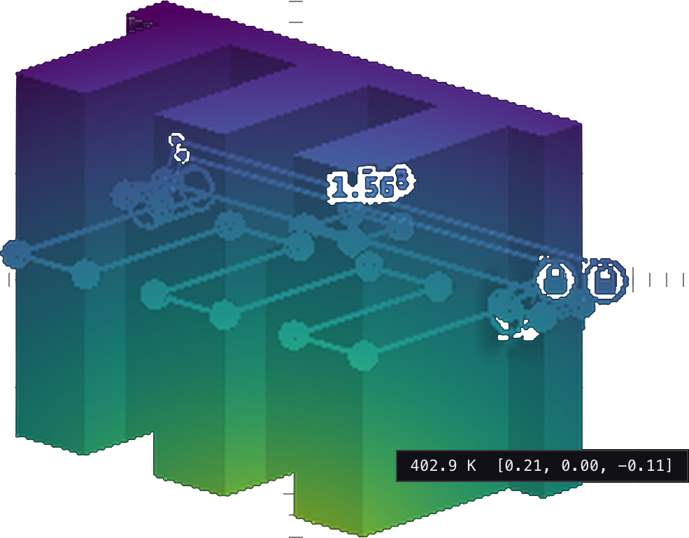

H1.00 m/div
V1.00 m/div
VIEWISO · +X−Y+Z
DIFFERENTIABLE CODE-FIRST CAD
SKETCH → CONSTRAINTS → SDF → MESH → FEM
FIELD · TEMPERATURE
0
1.134
ONE JAX FUNCTION · ∂J/∂p END TO END
REPOSITORY
github.com/andrinr/cadjoint
SCENE
starter.py · sink-conduction
SOLVER
jax-fem · sink-mesh tet10